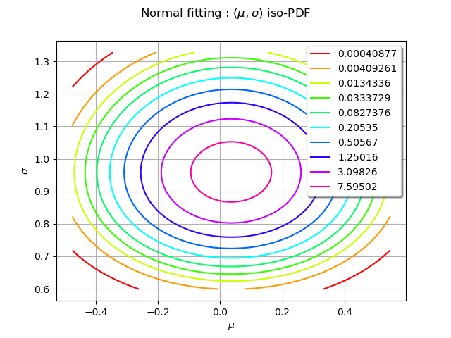
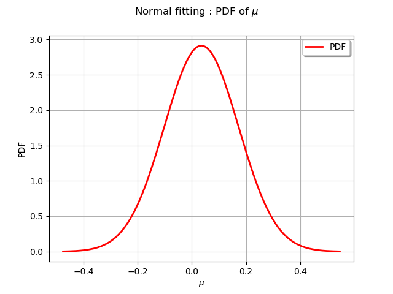
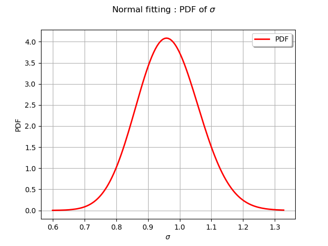
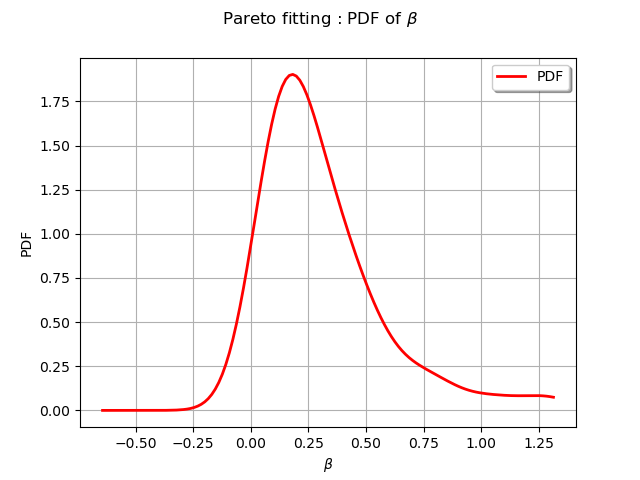
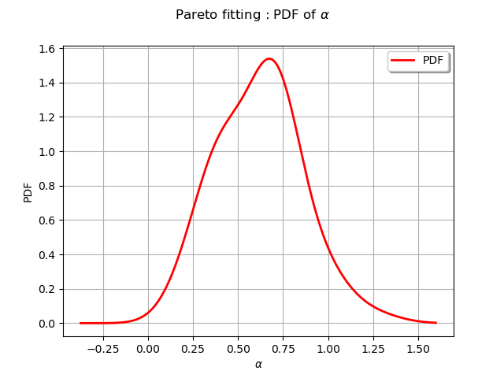
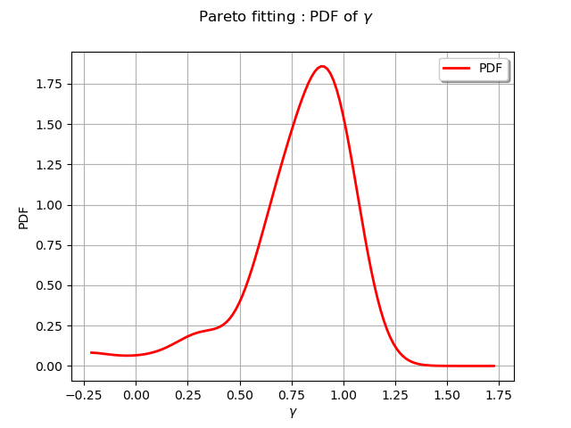

Note
Go to the end to download the full example code
Get the asymptotic distribution of the estimators¶
In this example we introduce the buildEstimator method to obtain the asymptotic distribution of the parameters of a fitted distribution obtained from a Factory.
import openturns as ot
import openturns.viewer as viewer
from matplotlib import pylab as plt
ot.Log.Show(ot.Log.NONE)
Set the random generator seed
ot.RandomGenerator.SetSeed(0)
The standard normal¶
The parameters of the standard normal distribution are estimated by a method of moments method. Thus the asymptotic parameters distribution is normal and estimated by bootstrap on the initial data.
distribution = ot.Normal(0.0, 1.0)
sample = distribution.getSample(50)
estimated = ot.NormalFactory().build(sample)
We take a look at the estimated parameters :
print(estimated.getParameter())
[0.0353171,0.968336]
The buildEstimator method gives the asymptotic parameters distribution.
fittedRes = ot.NormalFactory().buildEstimator(sample)
paramDist = fittedRes.getParameterDistribution()
We draw the 2D-PDF of the parameters
graph = paramDist.drawPDF()
graph.setXTitle(r"$\mu$")
graph.setYTitle(r"$\sigma$")
graph.setTitle(r"Normal fitting : $(\mu, \sigma)$ iso-PDF")
view = viewer.View(graph)

We draw the mean parameter  distribution
distribution
graph = paramDist.getMarginal(0).drawPDF()
graph.setTitle(r"Normal fitting : PDF of $\mu$")
graph.setXTitle(r"$\mu$")
graph.setLegends(["PDF"])
view = viewer.View(graph)

We draw the scale parameter  distribution
distribution
graph = paramDist.getMarginal(1).drawPDF()
graph.setTitle(r"Normal fitting : PDF of $\sigma$")
graph.setXTitle(r"$\sigma$")
graph.setLegends(["PDF"])
view = viewer.View(graph)

We observe on the two previous figures that the distribution is normal and centered around the estimated value of the parameter.
The Pareto distribution¶
We consider a Pareto distribution with a scale parameter  , a shape parameter
, a shape parameter  and a location parameter
and a location parameter  .
We generate a sample from this distribution and use a ParetoFactory to fit the sample.
In that case the asymptotic parameters distribution is estimated by bootstrap on the initial
data and kernel fitting (see KernelSmoothing).
.
We generate a sample from this distribution and use a ParetoFactory to fit the sample.
In that case the asymptotic parameters distribution is estimated by bootstrap on the initial
data and kernel fitting (see KernelSmoothing).
distribution = ot.Pareto(1.0, 1.0, 0.0)
sample = distribution.getSample(50)
estimated = ot.ParetoFactory().build(sample)
We take a look at the estimated parameters :
print(estimated.getParameter())
[0.39768,0.696349,0.690277]
The buildEstimator method gives the asymptotic parameters distribution.
fittedRes = ot.ParetoFactory().buildEstimator(sample)
paramDist = fittedRes.getParameterDistribution()
We draw scale parameter  distribution
distribution
graph = paramDist.getMarginal(0).drawPDF()
graph.setTitle(r"Pareto fitting : PDF of $\beta$")
graph.setXTitle(r"$\beta$")
graph.setLegends(["PDF"])
view = viewer.View(graph)

We draw the shape parameter  distribution
distribution
graph = paramDist.getMarginal(1).drawPDF()
graph.setTitle(r"Pareto fitting : PDF of $\alpha$")
graph.setXTitle(r"$\alpha$")
graph.setLegends(["PDF"])
view = viewer.View(graph)

We draw the location parameter  distribution
distribution
graph = paramDist.getMarginal(2).drawPDF()
graph.setTitle(r"Pareto fitting : PDF of $\gamma$")
graph.setXTitle(r"$\gamma$")
graph.setLegends(["PDF"])
view = viewer.View(graph)
plt.show()
